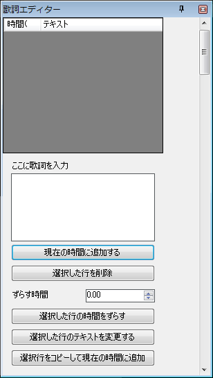
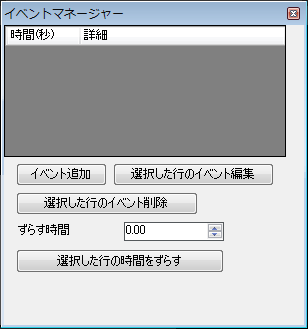

가사를 만드는 방법에 대해 설명합니다.
보기→가사 편집기를 눌러 가사 편집기를 표시합니다.

가장 먼저 시간 0에 비어있는 텍스트를 넣기 위해서 동영상의 시간을 0에 맞춘 뒤 글 상자에 아무것도 넣지 않고 현재 시간에 추가 단추을 누릅니다.
그리고 가사를 바꾸고 싶은 또 다른 시간에 동영상을 맞춘 뒤 가사를 글 상자에 넣고 현재 시간에 추가 단추을 누릅니다.
그러면 화면에 가사가 나타나게 됩니다. 가사를 표시하고 싶지 않은 시간은 글 상자를 비워두고 현재 시간에 추가를 누르면 됩니다.
가사가 추가되는 시간은 현재 동영상의 시간입니다. 설정하고 싶은 시간에 동영상을 맞춘 뒤 추가를 누르거나 타임 라인의 [L]노트를 끌어놓는 방법으로 가사가 나오는 시간을 조절할 수 있습니다.
이벤트에 대해 설명하겠습니다.(난이도가 조금 어려울지도 모르겠습니다)
보기→이벤트 매니저를 눌러 이벤트 매니저를 표시합니다.

이벤트 추가를 누르면 이벤트 추가 창이 나옵니다.
이벤트 매니저에서는, 각 노트의 소리 크기, 동영상의 소리 크기, 롱노트를 놓을 때 소리를 낼지, 속도바꾸기, 정지, 서든, 히든등이 설정을 할 수 있습니다.
동영상과 곡에 나타나는 효과에 맞춰 이벤트를 설정합시다.
이벤트가 추가되는 시간은 현재의 동영상의 시간이 됩니다. 설정하고 싶은 시간에 동영상을 맞춘 뒤 추가를 누르거나 타임 라인의 [E]노트를 끌어놓는 방법으로 시간을 조절할 수 있습니다.
다음으로